１０－１ 患者台帳
（１） 「管理」ボタンをクリックします
（２） 管理メニューが表示されるので「患者台帳」をクリックします
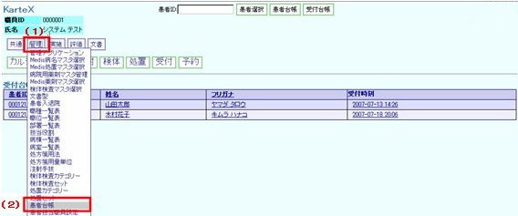
（３）新規アイコン
（４）右画面に情報入力部が表示されますので登録したい情報を入力します
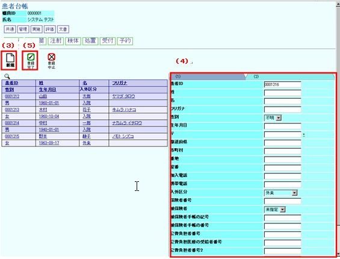
（５）登録完了アイコン
（６）患者情報の登録を完了します
１０－２ 検体検査 セット登録
（１） 「管理」ボタンをクリックします
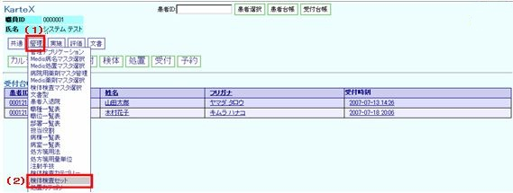
（２） 検体検査セットをクリックします
（３） 検体検査セット画面が表示されます
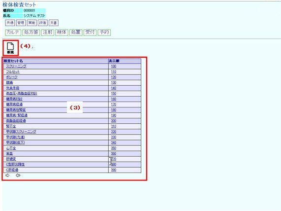
（４）新規アイコン
（５）初期画面が表示されます
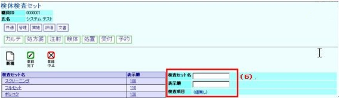
（６）検査セット名と表示順を入力し検査項目の（値無し）をクリックします
（７）検査項目リストが表示されます
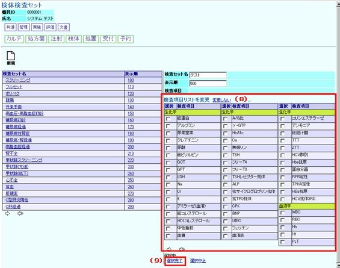
（８）検査項目リストよりセット登録する検査項目にチェックを入れます
（９）選択完了をクリックします
（１０） 本画面が表示されます
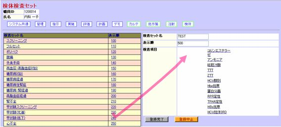
（１１） 登録完了ボタンをクリックします
（１２） 新規の検体検査セットが登録されます
１０－３ 検体検査 カテゴリー登録
（１） 「管理」ボタンをクリックします
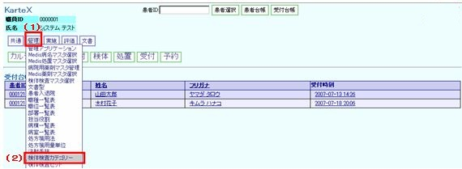
（２） 検体検査カテゴリーをクリックします
（３） 検体検査カテゴリー画面が表示されます
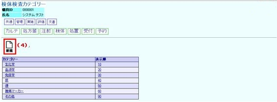
（４）新規アイコン
（５）右画面にカテゴリー登録画面が表示されます
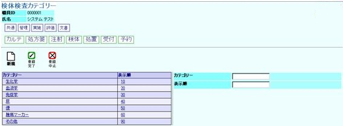
（６） カテゴリー、表示順を入力します
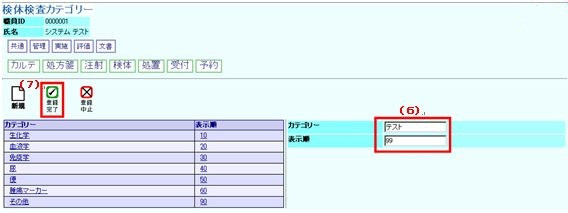
（７）登録完了
（８） 検体検査カテゴリーが登録されます
※表示順とは、画面に表示する順番のことです
１０－４ 病院用薬剤マスタ管理・参照
（１） 「管理」ボタンをクリックします
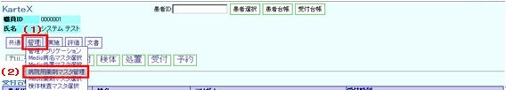
（２） 管理メニューが表示されるので「病院用薬剤マスタ管理」をクリックします
（３） 登録されている病院用薬剤マスタの一覧が表示されます
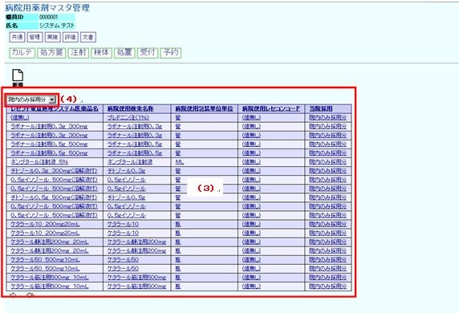
（４） プルダウンメニューより「院内のみ採用分」「院外追加採用分」で一覧表示する薬品を
選択できます
１０－５ 病院用薬剤マスタ管理・新規登録
（１）新規アイコン
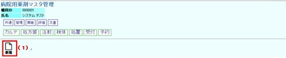
（２）画面右の薬品情報入力部で薬品情報を入力します
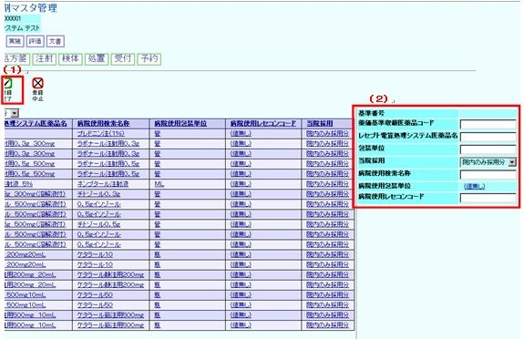
病院使用包装単位の（値無し）をクリックすると処方箋用量単位に登録している単位から
選択できます（１０－８ 処方箋用量単位 参照）
（３）登録完了アイコン
（４） 薬品登録を完了します
１０－６ 病院用薬剤マスタ管理・登録済み薬品からの登録
（１） １０－５ 病院用薬剤マスタ管理・参照より表示された登録薬品から登録した医薬品と近い
内容の薬品名をクリックします
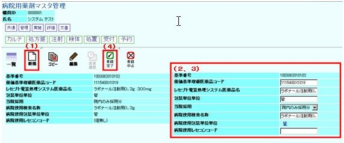
（２） 画面左に薬品の登録情報が表示されます
（３） コピーアイコンをクリックすると画面右に登録済み薬品の情報入力部が表示されます
薬価基準収載医薬品コード、薬品名など登録する薬品情報に修正します
（４） 登録完了アイコン
（５） 薬品登録を完了します
１０－７ 処方箋用量単位登録
（１） 「管理」ボタンをクリックします
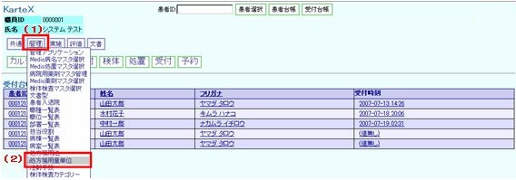
（２） 管理メニューが表示されるので「処方箋用量単位」をクリックします
（３） 新規アイコン
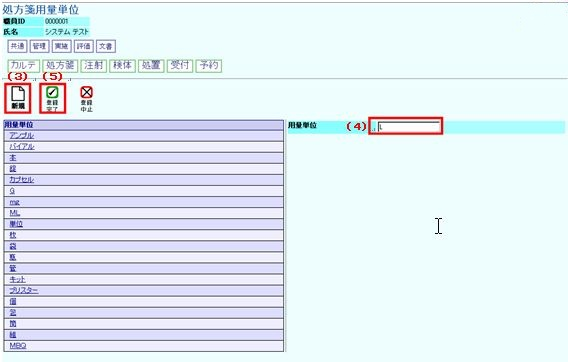
（４） 画面右に用量単位入力部が表示されますので、職員情報を入力します
（５） 登録完了アイコン
（６） 用量単位登録を完了します
１０－８ 職員台帳
（１）「管理」ボタンをクリックします
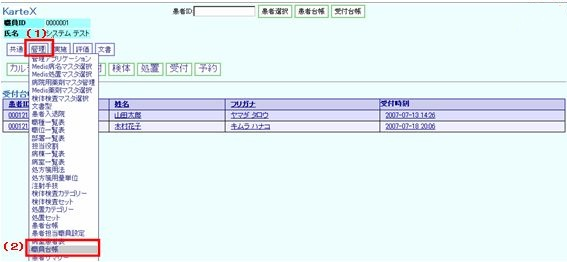
（２）管理メニューが表示されるので「職員台帳」をクリックします
（３）新規アイコン
（４）右画面に職員情報入力部が表示されますので、職員情報を入力します
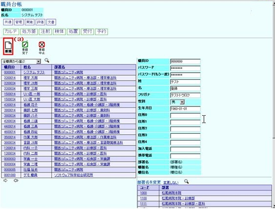
（５）（部署名）・（職種名）・（職位名）をクリックすると画面右下部にあらかじめ登録しておいた
情報が表示されるので登録したい部署・職種・職位を選択します
（６）登録完了アイコン
（７）職員登録を完了します
１０－９ 部署名・職種名・職位名登録
（１） 「管理」ボタンをクリックします
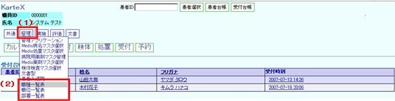
（２）管理メニューが表示されるので「職種一覧」（「職位一覧」，「部署一覧」）をクリックします
（３）新規アイコン
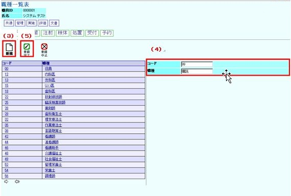
（４）右画面に情報入力部が表示されますので登録したい情報を入力します
（５）登録完了アイコン
（６）職種（職位，部署）の登録を完了します
１０－１０ 権限管理表
（１）「管理」ボタンをクリックします
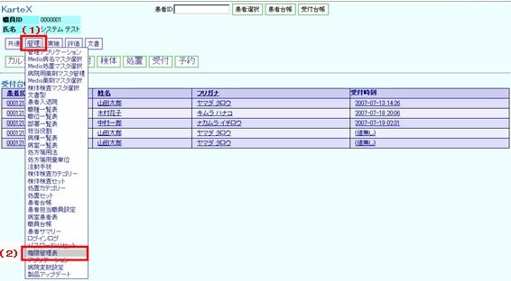
（２）管理メニューが表示されるので「権限管理表」をクリックします
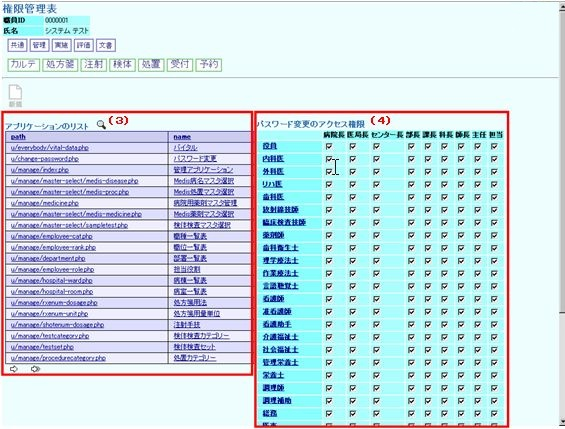
（３）画面左にアプリケーションリストが表示されますので権限設定したいアプリケーションをクリックします。
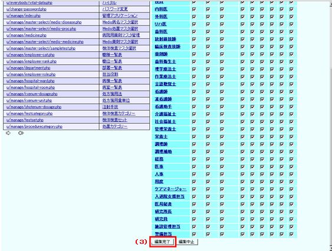
（４）画面右にアプリケーションに対するアクセス権限を設定する表が表示されます。
縦列に職種、横列に職位が表示されます。
アクセス権限を与えたい職種・職位にチェックを入れます。
※職種をクリックすると該当する職種に対する職位全てに一括でチェックを入れることが出来ます。
（５） 「編集完了」をクリックします
（６） 権限管理設定を完了します
１０－１１ 病院変数設定
（１） 「管理」ボタンをクリックします
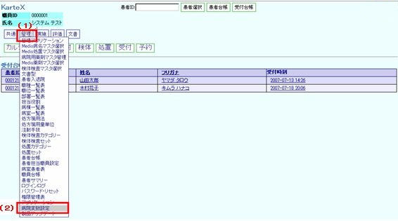
（２） 管理メニューが表示されるので「病院変数設定」をクリックします
（３） 画面下部に病院情報が表示されますので設定したい変数値をクリックします
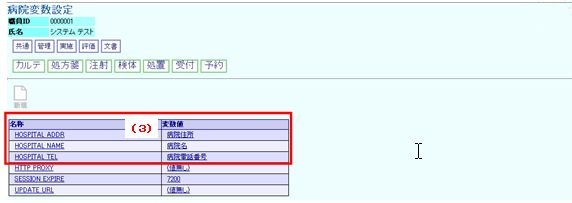
（４）左画面に選択した病院情報の変数値が表示されるので編集アイコンをクリックします
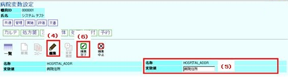
（５）右画面に情報入力部が表示されるので変数値を入力します
（６）登録完了アイコン
（７）患者情報の登録を完了します